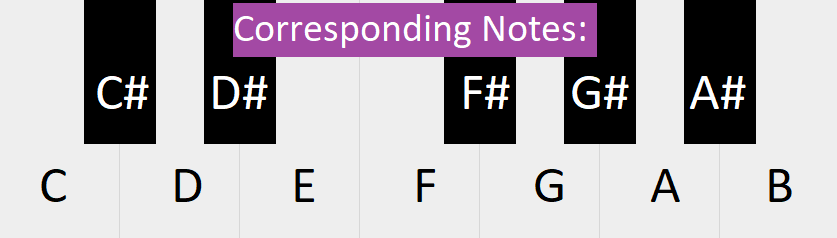
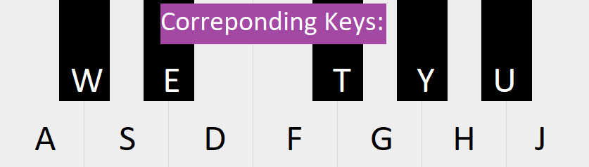

Inverse Replay is an algorithm designed to record simulated keyboard input and create the inverse sequence (by pitch)
of the originally played sequence.
The two matrices below have a row length proportionate to the notes being played.
From bottom to top, the rows equate to the notes:
C, C#, D, D#, E, F, F#, G, G#, A4, A#, B, C [1 octave up]
How the keyboard functions:
 
After recording, press the "Notate" button to recieve data on both sequences